National High School of Statistics and Applied Economics, Algeria · University of Córdoba, Spain
The Fisher Information Imbalance Signature (FIIS) is a logistic-model-based, trace-based diagnostic of class contributions to information in a specified preprocessed feature representation. Its decomposition, R = Rn · Rp · Rg · Rc, supports diagnosis-informed remedy guidance. This companion provides benchmark results, empirical diagnostic regimes, per-classifier comparisons and an illustrative Vertebral Column case study.
FIIS is estimated from the original training partitions before remedy application, using six repetitions of five-fold cross-validation (30 evaluations). Rp is relative to the fitted logistic boundary; Rg and Rc depend on the feature representation. Archetypes A and C are empirical diagnostic regimes, not an exhaustive taxonomy.
At ε = 0.05, deficiency (D): R < 0.95; balance (B): 0.95 ≤ R ≤ 1.05; overbalance (O): R > 1.05. This tolerance is operational. Mixed labels list evaluation-level diagnoses in decreasing frequency; archetype ties are resolved in favour of C. The remedy-effectiveness analysis uses a different aggregation rule: dominant archetype together with mean R < 1 (H1/H2) or mean R ≥ 1 (H3). It does not use the modal compensation label or the ε-band for grouping.
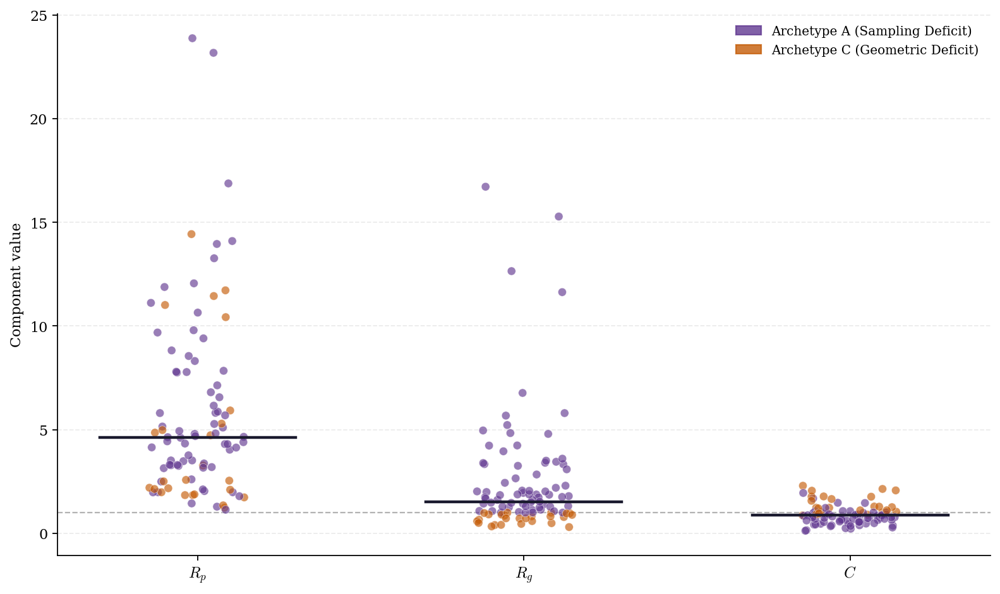
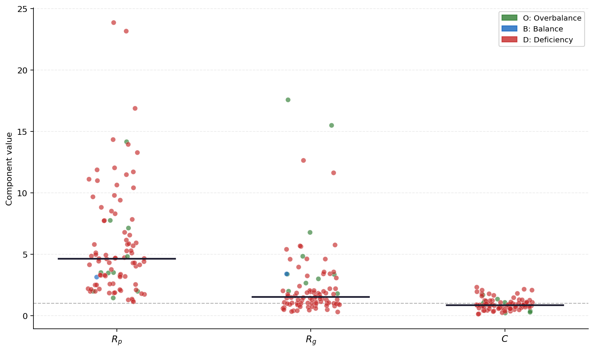
Components: mean ± sample standard deviation across 30 evaluations. Frequencies are percentages of evaluations, shown to one decimal place. IR = majority/minority sample count. The headline ratio uses the median of dataset-level R means divided by Rn means.
| Dataset | Source | IR | Rn | Rp | Rg | Rc | R | Arch. | %A | %C | Comp. | %D | %B | %O |
|---|---|---|---|---|---|---|---|---|---|---|---|---|---|---|
| glass1 | KEEL | 1.82 | 0.551 ± 0.006 | 1.240 ± 0.041 | 0.858 ± 0.078 | 1.294 ± 0.067 | 0.755 ± 0.047 | CA | 3.3 | 96.7 | D | 100.0 | 0.0 | 0.0 |
| ecoli-0_vs_1 | KEEL | 1.86 | 0.538 ± 0.007 | 1.445 ± 0.114 | 2.840 ± 0.346 | 0.945 ± 0.104 | 2.086 ± 0.385 | A | 100.0 | 0.0 | O | 0.0 | 0.0 | 100.0 |
| wisconsin | KEEL | 1.86 | 0.538 ± 0.001 | 1.983 ± 0.208 | 4.837 ± 0.065 | 0.375 ± 0.025 | 1.936 ± 0.247 | A | 100.0 | 0.0 | O | 0.0 | 0.0 | 100.0 |
| pima | KEEL | 1.87 | 0.536 ± 0.001 | 1.288 ± 0.017 | 1.437 ± 0.052 | 0.908 ± 0.015 | 0.900 ± 0.029 | A | 100.0 | 0.0 | D | 100.0 | 0.0 | 0.0 |
| iris0 | KEEL | 2.00 | 0.500 ± 0.000 | 1.985 ± 0.011 | 1.995 ± 0.069 | 1.689 ± 0.094 | 3.342 ± 0.207 | A | 100.0 | 0.0 | O | 0.0 | 0.0 | 100.0 |
| glass0 | KEEL | 2.06 | 0.486 ± 0.002 | 1.736 ± 0.049 | 0.305 ± 0.025 | 2.143 ± 0.187 | 0.549 ± 0.049 | C | 0.0 | 100.0 | D | 100.0 | 0.0 | 0.0 |
| yeast1 | KEEL | 2.46 | 0.407 ± 0.001 | 1.351 ± 0.021 | 0.788 ± 0.030 | 1.236 ± 0.055 | 0.535 ± 0.028 | C | 0.0 | 100.0 | D | 100.0 | 0.0 | 0.0 |
| haberman | KEEL | 2.78 | 0.360 ± 0.002 | 1.140 ± 0.029 | 1.394 ± 0.141 | 0.922 ± 0.072 | 0.524 ± 0.034 | A | 100.0 | 0.0 | D | 100.0 | 0.0 | 0.0 |
| vehicle2 | KEEL | 2.88 | 0.347 ± 0.001 | 2.498 ± 0.055 | 1.004 ± 0.056 | 0.859 ± 0.047 | 0.746 ± 0.032 | AC | 56.7 | 43.3 | D | 100.0 | 0.0 | 0.0 |
| vehicle1 | KEEL | 2.90 | 0.345 ± 0.001 | 1.843 ± 0.038 | 0.974 ± 0.020 | 1.029 ± 0.015 | 0.637 ± 0.013 | CA | 10.0 | 90.0 | D | 100.0 | 0.0 | 0.0 |
| vehicle3 | KEEL | 2.99 | 0.334 ± 0.001 | 1.845 ± 0.038 | 0.995 ± 0.027 | 1.044 ± 0.018 | 0.641 ± 0.015 | CA | 43.3 | 56.7 | D | 100.0 | 0.0 | 0.0 |
| glass-0-1-2-3_vs_4-5-6 | KEEL | 3.20 | 0.313 ± 0.004 | 1.792 ± 0.128 | 3.404 ± 0.292 | 0.389 ± 0.038 | 0.744 ± 0.123 | A | 100.0 | 0.0 | DBO | 86.7 | 10.0 | 3.3 |
| vehicle0 | KEEL | 3.25 | 0.308 ± 0.001 | 3.196 ± 0.088 | 1.031 ± 0.050 | 0.843 ± 0.038 | 0.854 ± 0.058 | AC | 70.0 | 30.0 | DB | 96.7 | 3.3 | 0.0 |
| ecoli1 | KEEL | 3.36 | 0.297 ± 0.003 | 2.542 ± 0.148 | 0.904 ± 0.080 | 1.044 ± 0.099 | 0.708 ± 0.055 | CA | 13.3 | 86.7 | D | 100.0 | 0.0 | 0.0 |
| new-thyroid1 | KEEL | 5.14 | 0.194 ± 0.000 | 3.517 ± 0.184 | 3.339 ± 0.128 | 1.073 ± 0.076 | 2.450 ± 0.224 | A | 100.0 | 0.0 | O | 0.0 | 0.0 | 100.0 |
| new-thyroid2 | KEEL | 5.14 | 0.194 ± 0.000 | 3.516 ± 0.161 | 3.336 ± 0.144 | 1.073 ± 0.083 | 2.444 ± 0.202 | A | 100.0 | 0.0 | O | 0.0 | 0.0 | 100.0 |
| ecoli2 | KEEL | 5.46 | 0.183 ± 0.002 | 3.273 ± 0.203 | 0.718 ± 0.044 | 0.868 ± 0.073 | 0.371 ± 0.021 | C | 0.0 | 100.0 | D | 100.0 | 0.0 | 0.0 |
| segment0 | KEEL | 6.01 | 0.166 ± 0.000 | 4.858 ± 0.207 | 0.402 ± 0.007 | 1.782 ± 0.069 | 0.579 ± 0.034 | C | 0.0 | 100.0 | D | 100.0 | 0.0 | 0.0 |
| glass6 | KEEL | 6.38 | 0.157 ± 0.003 | 4.036 ± 0.862 | 2.439 ± 0.215 | 0.422 ± 0.052 | 0.651 ± 0.186 | A | 100.0 | 0.0 | DBO | 90.0 | 6.7 | 3.3 |
| yeast3 | KEEL | 8.10 | 0.123 ± 0.001 | 4.731 ± 0.183 | 0.824 ± 0.056 | 0.903 ± 0.038 | 0.433 ± 0.029 | C | 0.0 | 100.0 | D | 100.0 | 0.0 | 0.0 |
| ecoli | imblearn | 8.60 | 0.116 ± 0.000 | 5.103 ± 0.341 | 1.075 ± 0.132 | 0.847 ± 0.161 | 0.531 ± 0.069 | AC | 80.0 | 20.0 | D | 100.0 | 0.0 | 0.0 |
| page-blocks0 | KEEL | 8.79 | 0.114 ± 0.000 | 3.482 ± 0.089 | 15.279 ± 0.747 | 0.226 ± 0.024 | 1.364 ± 0.140 | A | 100.0 | 0.0 | OB | 0.0 | 6.7 | 93.3 |
| ecoli-0-3-4_vs_5 | KEEL | 9.00 | 0.111 ± 0.000 | 4.656 ± 0.431 | 1.863 ± 0.410 | 0.744 ± 0.075 | 0.702 ± 0.098 | A | 100.0 | 0.0 | D | 100.0 | 0.0 | 0.0 |
| yeast-2_vs_4 | KEEL | 9.08 | 0.110 ± 0.001 | 4.137 ± 0.346 | 2.022 ± 0.201 | 0.910 ± 0.128 | 0.827 ± 0.068 | A | 100.0 | 0.0 | DB | 96.7 | 3.3 | 0.0 |
| ecoli-0-6-7_vs_3-5 | KEEL | 9.09 | 0.110 ± 0.003 | 4.306 ± 0.331 | 4.239 ± 0.919 | 0.464 ± 0.081 | 0.906 ± 0.170 | A | 100.0 | 0.0 | DBO | 53.3 | 30.0 | 16.7 |
| ecoli-0-2-3-4_vs_5 | KEEL | 9.10 | 0.110 ± 0.000 | 4.639 ± 0.370 | 1.875 ± 0.364 | 0.744 ± 0.080 | 0.699 ± 0.095 | A | 100.0 | 0.0 | D | 100.0 | 0.0 | 0.0 |
| glass-0-1-5_vs_2 | KEEL | 9.12 | 0.110 ± 0.004 | 1.880 ± 0.109 | 0.592 ± 0.091 | 1.768 ± 0.138 | 0.215 ± 0.034 | C | 0.0 | 100.0 | D | 100.0 | 0.0 | 0.0 |
| yeast-0-3-5-9_vs_7-8 | KEEL | 9.12 | 0.110 ± 0.000 | 1.979 ± 0.175 | 1.740 ± 0.122 | 1.009 ± 0.146 | 0.378 ± 0.048 | A | 100.0 | 0.0 | D | 100.0 | 0.0 | 0.0 |
| yeast-0-2-5-6_vs_3-7-8-9 | KEEL | 9.14 | 0.109 ± 0.001 | 3.144 ± 0.124 | 3.393 ± 0.177 | 0.826 ± 0.057 | 0.962 ± 0.065 | A | 100.0 | 0.0 | BDO | 36.7 | 56.7 | 6.7 |
| yeast-0-2-5-7-9_vs_3-6-8 | KEEL | 9.14 | 0.109 ± 0.001 | 4.820 ± 0.178 | 2.654 ± 0.109 | 0.986 ± 0.107 | 1.374 ± 0.122 | A | 100.0 | 0.0 | O | 0.0 | 0.0 | 100.0 |
| optical_digits | imblearn | 9.14 | 0.109 ± 0.000 | 5.292 ± 0.152 | 0.661 ± 0.027 | 1.264 ± 0.073 | 0.483 ± 0.021 | C | 0.0 | 100.0 | D | 100.0 | 0.0 | 0.0 |
| ecoli-0-4-6_vs_5 | KEEL | 9.15 | 0.109 ± 0.000 | 4.399 ± 0.538 | 1.952 ± 0.244 | 0.641 ± 0.042 | 0.597 ± 0.082 | A | 100.0 | 0.0 | D | 100.0 | 0.0 | 0.0 |
| ecoli-0-1_vs_2-3-5 | KEEL | 9.17 | 0.109 ± 0.002 | 4.610 ± 0.456 | 5.225 ± 1.063 | 0.346 ± 0.091 | 0.865 ± 0.114 | A | 100.0 | 0.0 | DOB | 80.0 | 10.0 | 10.0 |
| ecoli-0-2-6-7_vs_3-5 | KEEL | 9.18 | 0.109 ± 0.003 | 4.331 ± 0.521 | 4.233 ± 0.986 | 0.458 ± 0.092 | 0.878 ± 0.169 | A | 100.0 | 0.0 | DOB | 73.3 | 10.0 | 16.7 |
| glass-0-4_vs_5 | KEEL | 9.22 | 0.108 ± 0.006 | 4.796 ± 0.666 | 1.742 ± 0.350 | 0.473 ± 0.135 | 0.415 ± 0.110 | AC | 96.7 | 3.3 | D | 100.0 | 0.0 | 0.0 |
| ecoli-0-3-4-6_vs_5 | KEEL | 9.25 | 0.108 ± 0.000 | 4.439 ± 0.527 | 1.614 ± 0.210 | 0.779 ± 0.069 | 0.597 ± 0.074 | A | 100.0 | 0.0 | D | 100.0 | 0.0 | 0.0 |
| satimage | imblearn | 9.28 | 0.108 ± 0.000 | 1.984 ± 0.035 | 0.337 ± 0.005 | 1.235 ± 0.007 | 0.089 ± 0.002 | C | 0.0 | 100.0 | D | 100.0 | 0.0 | 0.0 |
| ecoli-0-3-4-7_vs_5-6 | KEEL | 9.28 | 0.108 ± 0.000 | 4.693 ± 0.543 | 2.299 ± 0.395 | 0.651 ± 0.083 | 0.741 ± 0.079 | A | 100.0 | 0.0 | D | 100.0 | 0.0 | 0.0 |
| yeast-0-5-6-7-9_vs_4 | KEEL | 9.35 | 0.107 ± 0.001 | 3.285 ± 0.195 | 1.142 ± 0.100 | 0.850 ± 0.153 | 0.337 ± 0.044 | AC | 86.7 | 13.3 | D | 100.0 | 0.0 | 0.0 |
| pen_digits | imblearn | 9.42 | 0.106 ± 0.000 | 5.277 ± 0.070 | 1.255 ± 0.006 | 0.897 ± 0.006 | 0.630 ± 0.009 | A | 100.0 | 0.0 | D | 100.0 | 0.0 | 0.0 |
| abalone | imblearn | 9.68 | 0.103 ± 0.000 | 2.604 ± 0.055 | 1.010 ± 0.014 | 0.991 ± 0.019 | 0.269 ± 0.007 | AC | 76.7 | 23.3 | D | 100.0 | 0.0 | 0.0 |
| sick_euthyroid | imblearn | 9.79 | 0.102 ± 0.000 | 5.926 ± 0.147 | 0.587 ± 0.024 | 1.772 ± 0.080 | 0.628 ± 0.026 | C | 0.0 | 100.0 | D | 100.0 | 0.0 | 0.0 |
| vowel0 | KEEL | 9.98 | 0.100 ± 0.000 | 7.138 ± 0.236 | 1.797 ± 0.027 | 0.935 ± 0.017 | 1.202 ± 0.046 | A | 100.0 | 0.0 | O | 0.0 | 0.0 | 100.0 |
| ecoli-0-6-7_vs_5 | KEEL | 10.00 | 0.100 ± 0.000 | 4.935 ± 0.619 | 2.062 ± 0.283 | 0.688 ± 0.080 | 0.691 ± 0.096 | A | 100.0 | 0.0 | D | 100.0 | 0.0 | 0.0 |
| glass-0-1-6_vs_2 | KEEL | 10.29 | 0.097 ± 0.004 | 2.103 ± 0.118 | 0.493 ± 0.053 | 2.073 ± 0.126 | 0.209 ± 0.029 | C | 0.0 | 100.0 | D | 100.0 | 0.0 | 0.0 |
| ecoli-0-1-4-7_vs_2-3-5-6 | KEEL | 10.59 | 0.095 ± 0.002 | 4.305 ± 0.379 | 4.963 ± 0.933 | 0.390 ± 0.090 | 0.759 ± 0.117 | A | 100.0 | 0.0 | DB | 90.0 | 10.0 | 0.0 |
| spectrometer | imblearn | 10.80 | 0.093 ± 0.000 | 7.779 ± 0.583 | 6.772 ± 0.438 | 0.285 ± 0.045 | 1.387 ± 0.245 | A | 100.0 | 0.0 | OBD | 6.7 | 6.7 | 86.7 |
| led7digit-0-2-4-5-6-7-8-9_vs_1 | KEEL | 10.97 | 0.091 ± 0.002 | 7.756 ± 0.845 | 1.429 ± 0.042 | 0.796 ± 0.025 | 0.803 ± 0.092 | A | 100.0 | 0.0 | DB | 93.3 | 6.7 | 0.0 |
| ecoli-0-1_vs_5 | KEEL | 11.00 | 0.091 ± 0.000 | 5.811 ± 0.496 | 3.089 ± 0.907 | 0.608 ± 0.119 | 0.943 ± 0.160 | A | 100.0 | 0.0 | DBO | 60.0 | 23.3 | 16.7 |
| glass-0-6_vs_5 | KEEL | 11.00 | 0.091 ± 0.005 | 5.152 ± 0.351 | 1.506 ± 0.370 | 0.648 ± 0.140 | 0.437 ± 0.073 | AC | 83.3 | 16.7 | D | 100.0 | 0.0 | 0.0 |
| glass-0-1-4-6_vs_2 | KEEL | 11.06 | 0.090 ± 0.004 | 2.175 ± 0.162 | 0.459 ± 0.076 | 2.297 ± 0.184 | 0.207 ± 0.037 | C | 0.0 | 100.0 | D | 100.0 | 0.0 | 0.0 |
| glass2 | KEEL | 11.59 | 0.086 ± 0.003 | 2.201 ± 0.169 | 0.411 ± 0.052 | 2.057 ± 0.179 | 0.160 ± 0.024 | C | 0.0 | 100.0 | D | 100.0 | 0.0 | 0.0 |
| car_eval_34 | imblearn | 11.90 | 0.084 ± 0.000 | 10.426 ± 0.214 | 1.000 ± 0.004 | 1.000 ± 0.003 | 0.876 ± 0.018 | CA | 50.0 | 50.0 | D | 100.0 | 0.0 | 0.0 |
| isolet | imblearn | 11.99 | 0.083 ± 0.000 | 11.445 ± 0.187 | 0.727 ± 0.005 | 1.289 ± 0.017 | 0.894 ± 0.019 | C | 0.0 | 100.0 | D | 100.0 | 0.0 | 0.0 |
| ecoli-0-1-4-7_vs_5-6 | KEEL | 12.28 | 0.081 ± 0.000 | 5.867 ± 0.700 | 3.258 ± 0.279 | 0.544 ± 0.053 | 0.840 ± 0.099 | A | 100.0 | 0.0 | DB | 80.0 | 20.0 | 0.0 |
| us_crime | imblearn | 12.29 | 0.081 ± 0.000 | 5.694 ± 0.213 | 2.024 ± 0.067 | 0.681 ± 0.025 | 0.637 ± 0.026 | A | 100.0 | 0.0 | D | 100.0 | 0.0 | 0.0 |
| cleveland-0_vs_4 | KEEL | 12.31 | 0.081 ± 0.004 | 9.795 ± 0.625 | 2.199 ± 0.126 | 0.549 ± 0.041 | 0.960 ± 0.112 | A | 100.0 | 0.0 | DBO | 50.0 | 33.3 | 16.7 |
| yeast_ml8 | imblearn | 12.58 | 0.080 ± 0.000 | 2.040 ± 0.092 | 1.001 ± 0.001 | 1.000 ± 0.001 | 0.162 ± 0.007 | AC | 76.7 | 23.3 | D | 100.0 | 0.0 | 0.0 |
| scene | imblearn | 12.60 | 0.079 ± 0.000 | 4.981 ± 0.206 | 0.915 ± 0.022 | 1.111 ± 0.038 | 0.402 ± 0.017 | C | 0.0 | 100.0 | D | 100.0 | 0.0 | 0.0 |
| ecoli-0-1-4-6_vs_5 | KEEL | 13.00 | 0.077 ± 0.000 | 5.801 ± 0.563 | 1.877 ± 0.168 | 0.662 ± 0.059 | 0.551 ± 0.060 | A | 100.0 | 0.0 | D | 100.0 | 0.0 | 0.0 |
| shuttle-c0-vs-c4 | KEEL | 13.87 | 0.072 ± 0.000 | 13.265 ± 0.231 | 16.716 ± 4.556 | 1.476 ± 0.524 | 23.829 ± 9.089 | A | 100.0 | 0.0 | O | 0.0 | 0.0 | 100.0 |
| libras_move | imblearn | 14.00 | 0.071 ± 0.002 | 8.312 ± 1.153 | 1.141 ± 0.052 | 1.076 ± 0.072 | 0.723 ± 0.065 | A | 100.0 | 0.0 | D | 100.0 | 0.0 | 0.0 |
| yeast-1_vs_7 | KEEL | 14.30 | 0.070 ± 0.000 | 3.371 ± 0.247 | 1.290 ± 0.083 | 1.465 ± 0.064 | 0.446 ± 0.049 | A | 100.0 | 0.0 | D | 100.0 | 0.0 | 0.0 |
| thyroid_sick | imblearn | 15.33 | 0.065 ± 0.000 | 7.840 ± 0.251 | 1.242 ± 0.269 | 0.919 ± 0.279 | 0.547 ± 0.033 | AC | 80.0 | 20.0 | D | 100.0 | 0.0 | 0.0 |
| glass4 | KEEL | 15.46 | 0.065 ± 0.003 | 6.804 ± 1.382 | 3.505 ± 0.466 | 0.250 ± 0.047 | 0.378 ± 0.082 | A | 100.0 | 0.0 | D | 100.0 | 0.0 | 0.0 |
| coil_2000 | imblearn | 15.76 | 0.063 ± 0.000 | 2.119 ± 0.037 | 1.286 ± 0.057 | 1.228 ± 0.045 | 0.212 ± 0.013 | A | 100.0 | 0.0 | D | 100.0 | 0.0 | 0.0 |
| ecoli4 | KEEL | 15.80 | 0.063 ± 0.000 | 9.404 ± 0.912 | 1.679 ± 0.278 | 0.745 ± 0.069 | 0.735 ± 0.096 | A | 100.0 | 0.0 | D | 100.0 | 0.0 | 0.0 |
| page-blocks-1-3_vs_4 | KEEL | 15.86 | 0.063 ± 0.001 | 3.254 ± 0.379 | 5.799 ± 0.687 | 0.492 ± 0.127 | 0.568 ± 0.124 | A | 100.0 | 0.0 | D | 100.0 | 0.0 | 0.0 |
| abalone9-18 | KEEL | 16.41 | 0.061 ± 0.001 | 4.147 ± 0.263 | 1.614 ± 0.117 | 0.852 ± 0.070 | 0.346 ± 0.032 | A | 100.0 | 0.0 | D | 100.0 | 0.0 | 0.0 |
| arrhythmia | imblearn | 17.08 | 0.059 ± 0.000 | 14.431 ± 0.294 | 0.504 ± 0.033 | 1.572 ± 0.110 | 0.667 ± 0.030 | C | 0.0 | 100.0 | D | 100.0 | 0.0 | 0.0 |
| solar_flare_m0 | imblearn | 19.43 | 0.051 ± 0.001 | 3.311 ± 0.254 | 2.051 ± 0.072 | 0.874 ± 0.044 | 0.305 ± 0.027 | A | 100.0 | 0.0 | D | 100.0 | 0.0 | 0.0 |
| glass-0-1-6_vs_5 | KEEL | 19.44 | 0.051 ± 0.003 | 8.553 ± 0.633 | 1.469 ± 0.343 | 0.556 ± 0.142 | 0.340 ± 0.051 | AC | 83.3 | 16.7 | D | 100.0 | 0.0 | 0.0 |
| shuttle-c2-vs-c4 | KEEL | 20.50 | 0.049 ± 0.004 | 14.097 ± 3.811 | 3.453 ± 0.396 | 0.427 ± 0.236 | 1.098 ± 0.873 | A | 100.0 | 0.0 | DO | 63.3 | 0.0 | 36.7 |
| oil | imblearn | 21.85 | 0.046 ± 0.001 | 8.822 ± 0.445 | 1.070 ± 0.072 | 0.874 ± 0.057 | 0.376 ± 0.018 | AC | 90.0 | 10.0 | D | 100.0 | 0.0 | 0.0 |
| yeast-1-4-5-8_vs_7 | KEEL | 22.10 | 0.045 ± 0.000 | 2.140 ± 0.268 | 0.726 ± 0.057 | 1.657 ± 0.094 | 0.117 ± 0.024 | C | 0.0 | 100.0 | D | 100.0 | 0.0 | 0.0 |
| glass5 | KEEL | 22.78 | 0.044 ± 0.003 | 7.794 ± 0.823 | 1.318 ± 0.307 | 0.698 ± 0.217 | 0.293 ± 0.035 | AC | 83.3 | 16.7 | D | 100.0 | 0.0 | 0.0 |
| yeast-2_vs_8 | KEEL | 23.10 | 0.043 ± 0.000 | 3.299 ± 0.585 | 3.959 ± 0.117 | 0.768 ± 0.124 | 0.431 ± 0.080 | A | 100.0 | 0.0 | D | 100.0 | 0.0 | 0.0 |
| car_eval_4 | imblearn | 25.59 | 0.039 ± 0.000 | 23.173 ± 0.636 | 1.000 ± 0.004 | 1.000 ± 0.003 | 0.906 ± 0.025 | AC | 56.7 | 43.3 | DB | 96.7 | 3.3 | 0.0 |
| wine_quality | imblearn | 25.77 | 0.039 ± 0.000 | 3.167 ± 0.221 | 1.846 ± 0.090 | 0.923 ± 0.042 | 0.209 ± 0.019 | A | 100.0 | 0.0 | D | 100.0 | 0.0 | 0.0 |
| letter_img | imblearn | 26.25 | 0.038 ± 0.000 | 11.720 ± 0.179 | 0.960 ± 0.008 | 0.916 ± 0.007 | 0.393 ± 0.007 | C | 0.0 | 100.0 | D | 100.0 | 0.0 | 0.0 |
| yeast_me2 | imblearn | 28.10 | 0.036 ± 0.000 | 6.159 ± 0.611 | 1.483 ± 0.159 | 0.763 ± 0.145 | 0.243 ± 0.023 | A | 100.0 | 0.0 | D | 100.0 | 0.0 | 0.0 |
| yeast-1-2-8-9_vs_7 | KEEL | 30.57 | 0.033 ± 0.000 | 3.763 ± 0.476 | 1.081 ± 0.098 | 1.949 ± 0.184 | 0.259 ± 0.043 | AC | 80.0 | 20.0 | D | 100.0 | 0.0 | 0.0 |
| yeast5 | KEEL | 32.73 | 0.031 ± 0.000 | 16.875 ± 0.985 | 1.877 ± 0.084 | 0.622 ± 0.025 | 0.601 ± 0.048 | A | 100.0 | 0.0 | D | 100.0 | 0.0 | 0.0 |
| ozone_level | imblearn | 33.74 | 0.030 ± 0.000 | 11.012 ± 0.704 | 0.893 ± 0.020 | 1.208 ± 0.025 | 0.352 ± 0.022 | C | 0.0 | 100.0 | D | 100.0 | 0.0 | 0.0 |
| webpage | imblearn | 34.45 | 0.029 ± 0.000 | 11.115 ± 0.350 | 11.633 ± 0.228 | 0.156 ± 0.007 | 0.585 ± 0.041 | A | 100.0 | 0.0 | D | 100.0 | 0.0 | 0.0 |
| ecoli-0-1-3-7_vs_2-6 | KEEL | 39.14 | 0.026 ± 0.002 | 9.686 ± 2.427 | 4.796 ± 0.782 | 0.547 ± 0.075 | 0.625 ± 0.122 | A | 100.0 | 0.0 | DO | 96.7 | 0.0 | 3.3 |
| abalone-17_vs_7-8-9-10 | KEEL | 39.31 | 0.025 ± 0.000 | 6.563 ± 0.552 | 1.757 ± 0.132 | 0.731 ± 0.087 | 0.214 ± 0.035 | A | 100.0 | 0.0 | D | 100.0 | 0.0 | 0.0 |
| abalone-21_vs_8 | KEEL | 40.50 | 0.025 ± 0.001 | 12.057 ± 1.978 | 3.603 ± 0.349 | 0.571 ± 0.068 | 0.606 ± 0.111 | A | 100.0 | 0.0 | D | 100.0 | 0.0 | 0.0 |
| yeast6 | KEEL | 41.40 | 0.024 ± 0.000 | 11.881 ± 0.927 | 1.304 ± 0.046 | 0.814 ± 0.047 | 0.304 ± 0.028 | A | 100.0 | 0.0 | D | 100.0 | 0.0 | 0.0 |
| mammography | imblearn | 42.01 | 0.024 ± 0.000 | 10.646 ± 0.361 | 5.679 ± 0.247 | 0.353 ± 0.034 | 0.507 ± 0.043 | A | 100.0 | 0.0 | D | 100.0 | 0.0 | 0.0 |
| abalone-19_vs_10-11-12-13 | KEEL | 49.69 | 0.020 ± 0.000 | 2.506 ± 0.286 | 0.819 ± 0.059 | 1.114 ± 0.097 | 0.046 ± 0.009 | C | 0.0 | 100.0 | D | 100.0 | 0.0 | 0.0 |
| abalone-20_vs_8-9-10 | KEEL | 72.69 | 0.014 ± 0.000 | 13.956 ± 1.306 | 1.528 ± 0.145 | 0.700 ± 0.101 | 0.206 ± 0.044 | A | 100.0 | 0.0 | D | 100.0 | 0.0 | 0.0 |
| protein_homo | imblearn | 111.46 | 0.009 ± 0.000 | 23.876 ± 0.636 | 12.646 ± 0.243 | 0.127 ± 0.008 | 0.344 ± 0.021 | A | 100.0 | 0.0 | D | 100.0 | 0.0 | 0.0 |
| abalone_19 | imblearn | 129.53 | 0.008 ± 0.000 | 2.577 ± 0.273 | 0.981 ± 0.084 | 0.963 ± 0.077 | 0.019 ± 0.004 | CA | 50.0 | 50.0 | D | 100.0 | 0.0 | 0.0 |
In the supplied analysis, H1 comprises dominant A with mean R < 1; H2 comprises dominant C with mean R < 1; H3 comprises mean R ≥ 1. These group definitions differ from the ε-based evaluation-level compensation labels above.
For each dataset and remedy, G-mean is averaged over 30 evaluations and three classifiers. Each dataset contributes one paired value per remedy to cross-dataset comparisons. Folds are not treated as independent datasets. Average ranks use tied ranks and higher G-mean receives a better (lower) rank.
Friedman provides the omnibus comparison; Nemenyi compares average ranks at α = 0.05. The plots and reported Friedman results use dataset means stored to four decimals, matching the supplied analysis precision. Friedman p-values use the asymptotic chi-square approximation. See Demšar (2006) and the SciPy documentation.
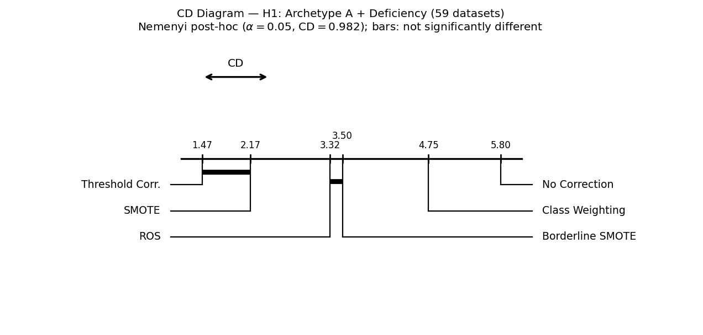
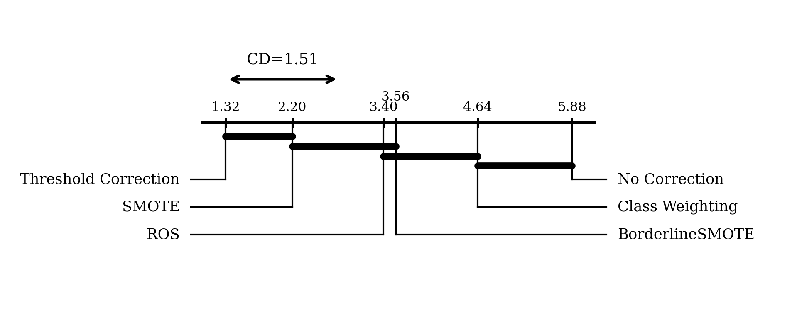
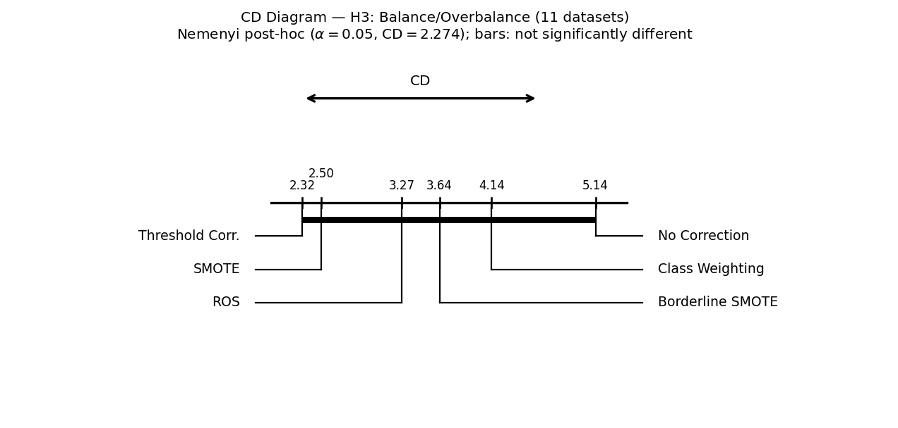
| Group | Datasets | Mean G-mean, all six remedies | Median IR | IR range |
|---|---|---|---|---|
| H1 | 58 | 0.7662 | 12.30 | 1.87–111.46 |
| H2 | 25 | 0.6873 | 9.79 | 1.82–129.53 |
| H3 | 11 | 0.9507 | 8.79 | 1.86–20.50 |
These are descriptive associations within the benchmark collection. They do not establish a causal effect of FIIS group membership or a validated remedy-selection policy. H2 is only partially supported; the small H3 group and high performance levels warrant caution about ceiling effects and undetected differences.
Logistic regression (LR), random forest (RF) and XGBoost (XGB) are evaluated separately. Each Wilcoxon comparison pairs dataset-level mean G-mean values; Bonferroni adjustment covers the 15 remedy pairs within each classifier and hypothesis group. Nemenyi and Wilcoxon are distinct comparisons and can give different significance decisions.
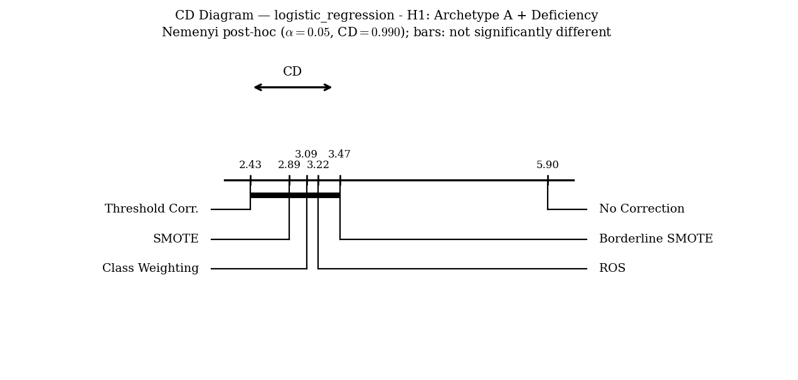
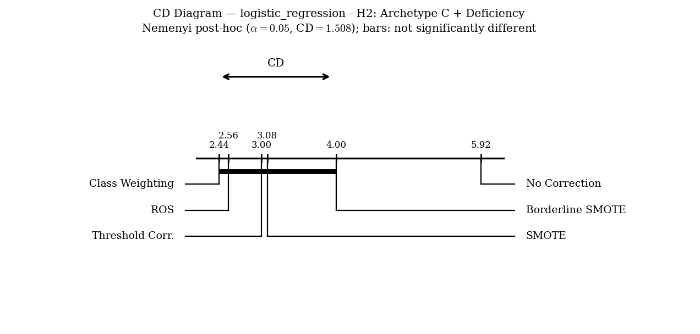
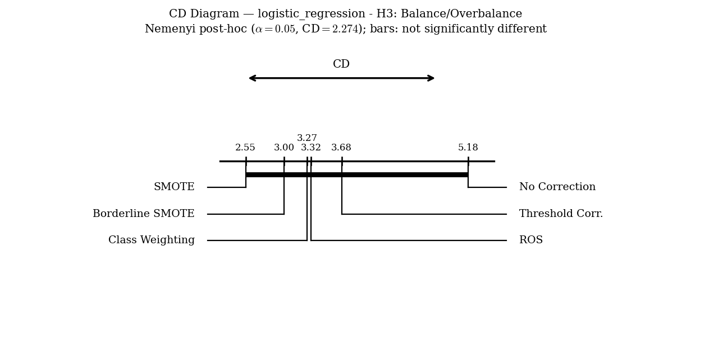
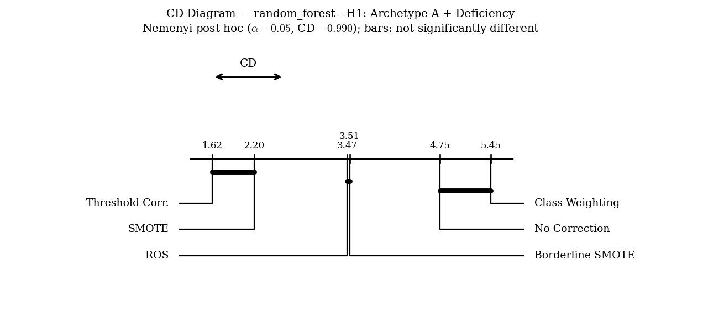
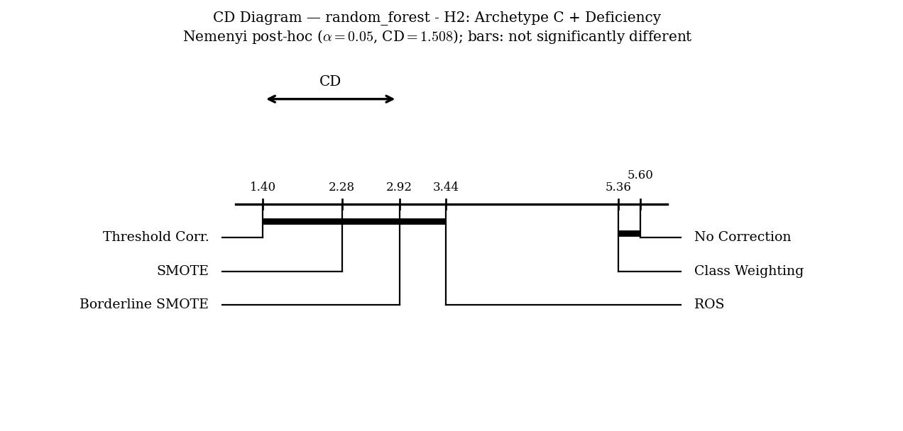
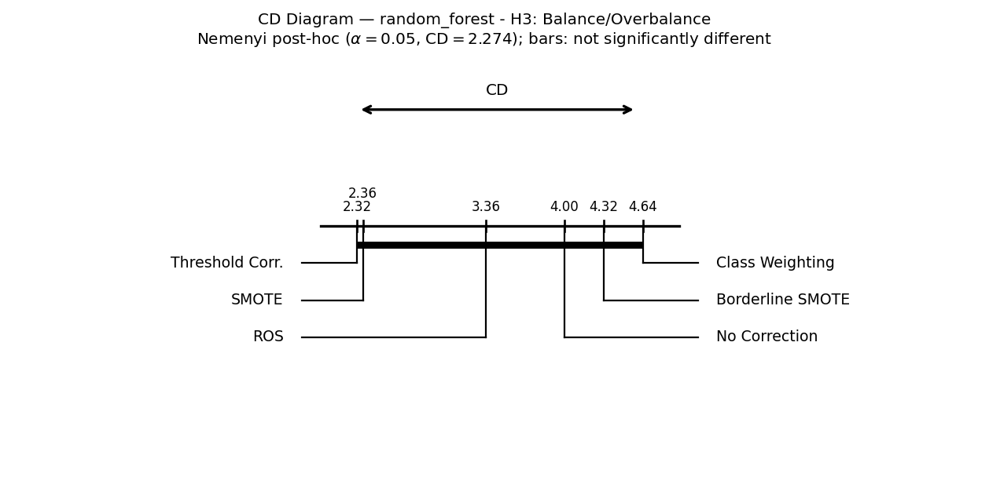
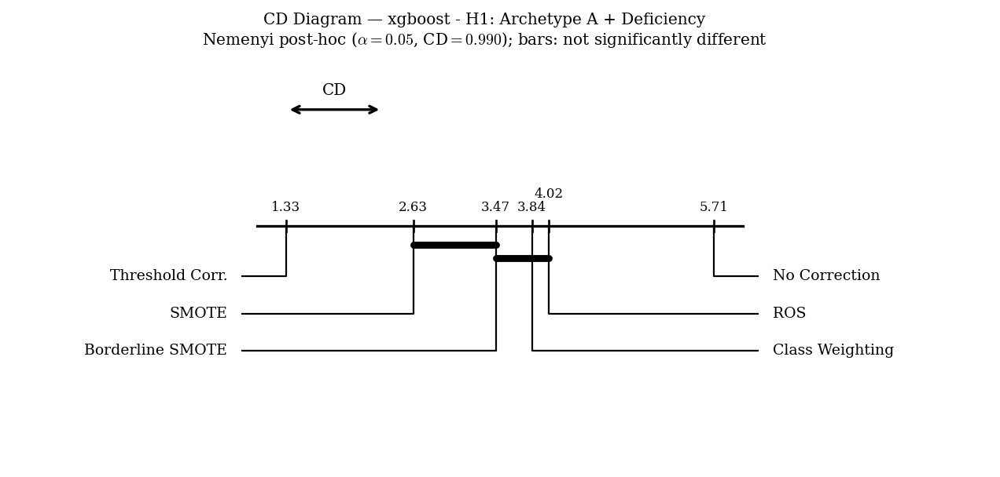
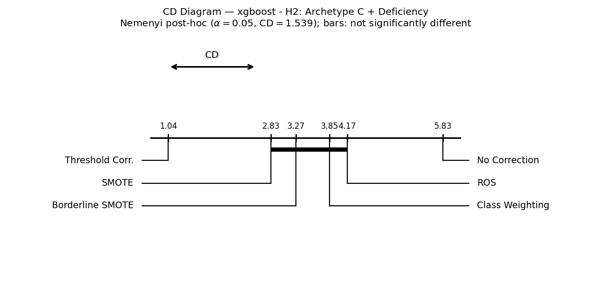
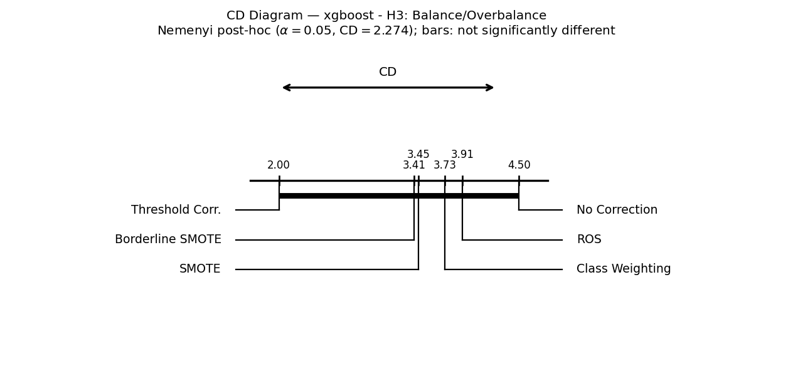
Δ is the arithmetic mean G-mean difference (Remedy 1 − Remedy 2). Its sign gives the descriptive mean direction. p is nominal; pB is Bonferroni-adjusted. Zero differences are excluded from signed ranks; nnz is the number of nonzero pairs. Results below reproduce the supplied Wilcoxon CSV.
| Classifier | Group | Remedy 1 | Remedy 2 | p | pB | Δ | n | nnz | Significant (adjusted) |
|---|---|---|---|---|---|---|---|---|---|
| LR | H1 | No Correction | Threshold Corr. | <0.0001 | <0.0001 | -0.2262 | 58 | 58 | Yes |
| LR | H1 | No Correction | ROS | <0.0001 | <0.0001 | -0.2223 | 58 | 58 | Yes |
| LR | H1 | No Correction | SMOTE | <0.0001 | <0.0001 | -0.2226 | 58 | 58 | Yes |
| LR | H1 | No Correction | Borderline SMOTE | <0.0001 | <0.0001 | -0.2153 | 58 | 58 | Yes |
| LR | H1 | No Correction | Class Weighting | <0.0001 | <0.0001 | -0.2224 | 58 | 58 | Yes |
| LR | H1 | Threshold Corr. | ROS | 0.0302 | 0.4525 | +0.0039 | 58 | 58 | No |
| LR | H1 | Threshold Corr. | SMOTE | 0.0571 | 0.8558 | +0.0036 | 58 | 57 | No |
| LR | H1 | Threshold Corr. | Borderline SMOTE | 0.0048 | 0.0716 | +0.0109 | 58 | 58 | No |
| LR | H1 | Threshold Corr. | Class Weighting | 0.0555 | 0.8327 | +0.0038 | 58 | 57 | No |
| LR | H1 | ROS | SMOTE | 0.7188 | 1.0000 | -0.0003 | 58 | 58 | No |
| LR | H1 | ROS | Borderline SMOTE | 0.0624 | 0.9365 | +0.0070 | 58 | 57 | No |
| LR | H1 | ROS | Class Weighting | 0.6679 | 1.0000 | -0.0001 | 58 | 57 | No |
| LR | H1 | SMOTE | Borderline SMOTE | 0.0012 | 0.0183 | +0.0073 | 58 | 56 | Yes |
| LR | H1 | SMOTE | Class Weighting | 0.4715 | 1.0000 | +0.0002 | 58 | 58 | No |
| LR | H1 | Borderline SMOTE | Class Weighting | 0.0743 | 1.0000 | -0.0071 | 58 | 58 | No |
| LR | H2 | No Correction | Threshold Corr. | <0.0001 | <0.0001 | -0.3192 | 25 | 25 | Yes |
| LR | H2 | No Correction | ROS | <0.0001 | <0.0001 | -0.3214 | 25 | 25 | Yes |
| LR | H2 | No Correction | SMOTE | <0.0001 | <0.0001 | -0.3155 | 25 | 25 | Yes |
| LR | H2 | No Correction | Borderline SMOTE | <0.0001 | <0.0001 | -0.3026 | 25 | 25 | Yes |
| LR | H2 | No Correction | Class Weighting | <0.0001 | <0.0001 | -0.3201 | 25 | 25 | Yes |
| LR | H2 | Threshold Corr. | ROS | 0.7510 | 1.0000 | -0.0022 | 25 | 25 | No |
| LR | H2 | Threshold Corr. | SMOTE | 1.0000 | 1.0000 | +0.0036 | 25 | 25 | No |
| LR | H2 | Threshold Corr. | Borderline SMOTE | 0.1014 | 1.0000 | +0.0166 | 25 | 25 | No |
| LR | H2 | Threshold Corr. | Class Weighting | 0.3532 | 1.0000 | -0.0009 | 25 | 25 | No |
| LR | H2 | ROS | SMOTE | 0.0303 | 0.4545 | +0.0058 | 25 | 25 | No |
| LR | H2 | ROS | Borderline SMOTE | 0.0009 | 0.0137 | +0.0188 | 25 | 25 | Yes |
| LR | H2 | ROS | Class Weighting | 0.9036 | 1.0000 | +0.0013 | 25 | 25 | No |
| LR | H2 | SMOTE | Borderline SMOTE | 0.0143 | 0.2150 | +0.0129 | 25 | 25 | No |
| LR | H2 | SMOTE | Class Weighting | 0.0230 | 0.3447 | -0.0045 | 25 | 25 | No |
| LR | H2 | Borderline SMOTE | Class Weighting | 0.0028 | 0.0423 | -0.0175 | 25 | 25 | Yes |
| LR | H3 | No Correction | Threshold Corr. | 0.0039 | 0.0586 | -0.0362 | 11 | 9 | No |
| LR | H3 | No Correction | ROS | 0.0117 | 0.1758 | -0.0328 | 11 | 9 | No |
| LR | H3 | No Correction | SMOTE | 0.0078 | 0.1172 | -0.0341 | 11 | 8 | No |
| LR | H3 | No Correction | Borderline SMOTE | 0.0391 | 0.5859 | -0.0299 | 11 | 8 | No |
| LR | H3 | No Correction | Class Weighting | 0.0117 | 0.1758 | -0.0338 | 11 | 9 | No |
| LR | H3 | Threshold Corr. | ROS | 0.4961 | 1.0000 | +0.0034 | 11 | 9 | No |
| LR | H3 | Threshold Corr. | SMOTE | 0.2500 | 1.0000 | +0.0022 | 11 | 8 | No |
| LR | H3 | Threshold Corr. | Borderline SMOTE | 0.7969 | 1.0000 | +0.0063 | 11 | 9 | No |
| LR | H3 | Threshold Corr. | Class Weighting | 0.2500 | 1.0000 | +0.0024 | 11 | 9 | No |
| LR | H3 | ROS | SMOTE | 0.2109 | 1.0000 | -0.0013 | 11 | 8 | No |
| LR | H3 | ROS | Borderline SMOTE | 0.5156 | 1.0000 | +0.0029 | 11 | 9 | No |
| LR | H3 | ROS | Class Weighting | 0.5781 | 1.0000 | -0.0010 | 11 | 7 | No |
| LR | H3 | SMOTE | Borderline SMOTE | 0.6406 | 1.0000 | +0.0042 | 11 | 8 | No |
| LR | H3 | SMOTE | Class Weighting | 0.5469 | 1.0000 | +0.0003 | 11 | 9 | No |
| LR | H3 | Borderline SMOTE | Class Weighting | 0.8203 | 1.0000 | -0.0039 | 11 | 9 | No |
| RF | H1 | No Correction | Threshold Corr. | <0.0001 | <0.0001 | -0.1951 | 58 | 58 | Yes |
| RF | H1 | No Correction | ROS | <0.0001 | <0.0001 | -0.0537 | 58 | 56 | Yes |
| RF | H1 | No Correction | SMOTE | <0.0001 | <0.0001 | -0.1047 | 58 | 57 | Yes |
| RF | H1 | No Correction | Borderline SMOTE | <0.0001 | 0.0002 | -0.0675 | 58 | 57 | Yes |
| RF | H1 | No Correction | Class Weighting | <0.0001 | 0.0007 | +0.0285 | 58 | 57 | Yes |
| RF | H1 | Threshold Corr. | ROS | <0.0001 | <0.0001 | +0.1414 | 58 | 58 | Yes |
| RF | H1 | Threshold Corr. | SMOTE | <0.0001 | <0.0001 | +0.0904 | 58 | 58 | Yes |
| RF | H1 | Threshold Corr. | Borderline SMOTE | <0.0001 | <0.0001 | +0.1276 | 58 | 58 | Yes |
| RF | H1 | Threshold Corr. | Class Weighting | <0.0001 | <0.0001 | +0.2236 | 58 | 58 | Yes |
| RF | H1 | ROS | SMOTE | <0.0001 | <0.0001 | -0.0510 | 58 | 57 | Yes |
| RF | H1 | ROS | Borderline SMOTE | 0.1157 | 1.0000 | -0.0138 | 58 | 57 | No |
| RF | H1 | ROS | Class Weighting | <0.0001 | <0.0001 | +0.0822 | 58 | 57 | Yes |
| RF | H1 | SMOTE | Borderline SMOTE | <0.0001 | <0.0001 | +0.0372 | 58 | 57 | Yes |
| RF | H1 | SMOTE | Class Weighting | <0.0001 | <0.0001 | +0.1332 | 58 | 58 | Yes |
| RF | H1 | Borderline SMOTE | Class Weighting | <0.0001 | <0.0001 | +0.0960 | 58 | 58 | Yes |
| RF | H2 | No Correction | Threshold Corr. | <0.0001 | <0.0001 | -0.3020 | 25 | 25 | Yes |
| RF | H2 | No Correction | ROS | <0.0001 | <0.0001 | -0.0965 | 25 | 25 | Yes |
| RF | H2 | No Correction | SMOTE | <0.0001 | <0.0001 | -0.1612 | 25 | 25 | Yes |
| RF | H2 | No Correction | Borderline SMOTE | <0.0001 | <0.0001 | -0.1276 | 25 | 25 | Yes |
| RF | H2 | No Correction | Class Weighting | 0.0228 | 0.3421 | -0.0181 | 25 | 21 | No |
| RF | H2 | Threshold Corr. | ROS | <0.0001 | 0.0002 | +0.2055 | 25 | 25 | Yes |
| RF | H2 | Threshold Corr. | SMOTE | <0.0001 | 0.0002 | +0.1407 | 25 | 25 | Yes |
| RF | H2 | Threshold Corr. | Borderline SMOTE | <0.0001 | <0.0001 | +0.1744 | 25 | 25 | Yes |
| RF | H2 | Threshold Corr. | Class Weighting | <0.0001 | <0.0001 | +0.2838 | 25 | 25 | Yes |
| RF | H2 | ROS | SMOTE | <0.0001 | 0.0006 | -0.0647 | 25 | 25 | Yes |
| RF | H2 | ROS | Borderline SMOTE | 0.0160 | 0.2403 | -0.0311 | 25 | 25 | No |
| RF | H2 | ROS | Class Weighting | <0.0001 | 0.0002 | +0.0784 | 25 | 25 | Yes |
| RF | H2 | SMOTE | Borderline SMOTE | 0.0283 | 0.4246 | +0.0337 | 25 | 25 | No |
| RF | H2 | SMOTE | Class Weighting | <0.0001 | <0.0001 | +0.1431 | 25 | 25 | Yes |
| RF | H2 | Borderline SMOTE | Class Weighting | <0.0001 | <0.0001 | +0.1094 | 25 | 25 | Yes |
| RF | H3 | No Correction | Threshold Corr. | 0.0078 | 0.1172 | -0.0178 | 11 | 9 | No |
| RF | H3 | No Correction | ROS | 0.3125 | 1.0000 | -0.0067 | 11 | 8 | No |
| RF | H3 | No Correction | SMOTE | 0.0742 | 1.0000 | -0.0135 | 11 | 9 | No |
| RF | H3 | No Correction | Borderline SMOTE | 0.8438 | 1.0000 | +0.0016 | 11 | 8 | No |
| RF | H3 | No Correction | Class Weighting | 0.2031 | 1.0000 | +0.0083 | 11 | 9 | No |
| RF | H3 | Threshold Corr. | ROS | 0.0977 | 1.0000 | +0.0110 | 11 | 9 | No |
| RF | H3 | Threshold Corr. | SMOTE | 0.3984 | 1.0000 | +0.0043 | 11 | 8 | No |
| RF | H3 | Threshold Corr. | Borderline SMOTE | 0.0273 | 0.4102 | +0.0194 | 11 | 9 | No |
| RF | H3 | Threshold Corr. | Class Weighting | 0.0117 | 0.1758 | +0.0261 | 11 | 9 | No |
| RF | H3 | ROS | SMOTE | 0.0391 | 0.5859 | -0.0068 | 11 | 8 | No |
| RF | H3 | ROS | Borderline SMOTE | 0.3594 | 1.0000 | +0.0083 | 11 | 9 | No |
| RF | H3 | ROS | Class Weighting | 0.0078 | 0.1172 | +0.0151 | 11 | 9 | No |
| RF | H3 | SMOTE | Borderline SMOTE | 0.0195 | 0.2930 | +0.0151 | 11 | 9 | No |
| RF | H3 | SMOTE | Class Weighting | 0.0078 | 0.1172 | +0.0218 | 11 | 9 | No |
| RF | H3 | Borderline SMOTE | Class Weighting | 0.4258 | 1.0000 | +0.0067 | 11 | 9 | No |
| XGB | H1 | No Correction | Threshold Corr. | <0.0001 | <0.0001 | -0.1441 | 58 | 58 | Yes |
| XGB | H1 | No Correction | ROS | <0.0001 | <0.0001 | -0.0728 | 58 | 58 | Yes |
| XGB | H1 | No Correction | SMOTE | <0.0001 | <0.0001 | -0.0885 | 58 | 58 | Yes |
| XGB | H1 | No Correction | Borderline SMOTE | <0.0001 | <0.0001 | -0.0719 | 58 | 58 | Yes |
| XGB | H1 | No Correction | Class Weighting | <0.0001 | <0.0001 | -0.0740 | 58 | 58 | Yes |
| XGB | H1 | Threshold Corr. | ROS | <0.0001 | <0.0001 | +0.0713 | 58 | 58 | Yes |
| XGB | H1 | Threshold Corr. | SMOTE | <0.0001 | <0.0001 | +0.0556 | 58 | 58 | Yes |
| XGB | H1 | Threshold Corr. | Borderline SMOTE | <0.0001 | <0.0001 | +0.0722 | 58 | 58 | Yes |
| XGB | H1 | Threshold Corr. | Class Weighting | <0.0001 | <0.0001 | +0.0701 | 58 | 58 | Yes |
| XGB | H1 | ROS | SMOTE | 0.0001 | 0.0019 | -0.0157 | 58 | 58 | Yes |
| XGB | H1 | ROS | Borderline SMOTE | 0.0594 | 0.8909 | +0.0009 | 58 | 58 | No |
| XGB | H1 | ROS | Class Weighting | 0.4183 | 1.0000 | -0.0012 | 58 | 54 | No |
| XGB | H1 | SMOTE | Borderline SMOTE | <0.0001 | 0.0010 | +0.0166 | 58 | 55 | Yes |
| XGB | H1 | SMOTE | Class Weighting | 0.0002 | 0.0025 | +0.0145 | 58 | 58 | Yes |
| XGB | H1 | Borderline SMOTE | Class Weighting | 0.1291 | 1.0000 | -0.0020 | 58 | 58 | No |
| XGB | H2 | No Correction | Threshold Corr. | <0.0001 | <0.0001 | -0.1459 | 25 | 25 | Yes |
| XGB | H2 | No Correction | ROS | <0.0001 | <0.0001 | -0.0575 | 25 | 25 | Yes |
| XGB | H2 | No Correction | SMOTE | <0.0001 | <0.0001 | -0.0919 | 25 | 25 | Yes |
| XGB | H2 | No Correction | Borderline SMOTE | <0.0001 | <0.0001 | -0.0849 | 25 | 25 | Yes |
| XGB | H2 | No Correction | Class Weighting | <0.0001 | <0.0001 | -0.0577 | 25 | 25 | Yes |
| XGB | H2 | Threshold Corr. | ROS | <0.0001 | <0.0001 | +0.0884 | 25 | 25 | Yes |
| XGB | H2 | Threshold Corr. | SMOTE | <0.0001 | <0.0001 | +0.0540 | 25 | 25 | Yes |
| XGB | H2 | Threshold Corr. | Borderline SMOTE | <0.0001 | <0.0001 | +0.0610 | 25 | 25 | Yes |
| XGB | H2 | Threshold Corr. | Class Weighting | <0.0001 | <0.0001 | +0.0882 | 25 | 25 | Yes |
| XGB | H2 | ROS | SMOTE | 0.0042 | 0.0624 | -0.0344 | 25 | 25 | No |
| XGB | H2 | ROS | Borderline SMOTE | 0.0037 | 0.0549 | -0.0274 | 25 | 25 | No |
| XGB | H2 | ROS | Class Weighting | 0.5019 | 1.0000 | -0.0001 | 25 | 24 | No |
| XGB | H2 | SMOTE | Borderline SMOTE | 0.1919 | 1.0000 | +0.0070 | 25 | 25 | No |
| XGB | H2 | SMOTE | Class Weighting | 0.0071 | 0.1069 | +0.0342 | 25 | 25 | No |
| XGB | H2 | Borderline SMOTE | Class Weighting | 0.0119 | 0.1780 | +0.0272 | 25 | 25 | No |
| XGB | H3 | No Correction | Threshold Corr. | 0.0039 | 0.0586 | -0.0152 | 11 | 9 | No |
| XGB | H3 | No Correction | ROS | 0.2500 | 1.0000 | -0.0031 | 11 | 9 | No |
| XGB | H3 | No Correction | SMOTE | 0.0742 | 1.0000 | -0.0059 | 11 | 9 | No |
| XGB | H3 | No Correction | Borderline SMOTE | 0.0156 | 0.2344 | -0.0041 | 11 | 8 | No |
| XGB | H3 | No Correction | Class Weighting | 0.2500 | 1.0000 | -0.0031 | 11 | 9 | No |
| XGB | H3 | Threshold Corr. | ROS | 0.0195 | 0.2930 | +0.0121 | 11 | 9 | No |
| XGB | H3 | Threshold Corr. | SMOTE | 0.0156 | 0.2344 | +0.0093 | 11 | 9 | No |
| XGB | H3 | Threshold Corr. | Borderline SMOTE | 0.0547 | 0.8203 | +0.0112 | 11 | 9 | No |
| XGB | H3 | Threshold Corr. | Class Weighting | 0.0117 | 0.1758 | +0.0121 | 11 | 9 | No |
| XGB | H3 | ROS | SMOTE | 0.1562 | 1.0000 | -0.0029 | 11 | 7 | No |
| XGB | H3 | ROS | Borderline SMOTE | 0.4766 | 1.0000 | -0.0010 | 11 | 9 | No |
| XGB | H3 | ROS | Class Weighting | 0.6406 | 1.0000 | -0.0000 | 11 | 8 | No |
| XGB | H3 | SMOTE | Borderline SMOTE | 0.9844 | 1.0000 | +0.0019 | 11 | 9 | No |
| XGB | H3 | SMOTE | Class Weighting | 0.4609 | 1.0000 | +0.0028 | 11 | 8 | No |
| XGB | H3 | Borderline SMOTE | Class Weighting | 0.4961 | 1.0000 | +0.0010 | 11 | 9 | No |
H3 has no Bonferroni-significant Wilcoxon pairs for any of the three classifiers. This is not a demonstration of equivalence. Conclusions are limited to the evaluated classifiers and predominantly to G-mean.
The UCI Vertebral Column dataset contains 310 observations: Normal (minority, n1 = 100) and Abnormal (majority, n0 = 210), with six biomechanical features and IR = 2.1. The case illustrates the diagnostic analysis in this preprocessed representation; it does not establish clinical generalisability.
Mean ± sample standard deviation across 30 training-partition evaluations (six repetitions of five-fold cross-validation). Each evaluation is counted once for the diagnostic summary.
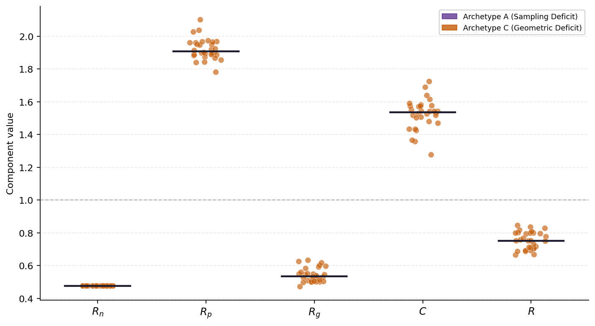
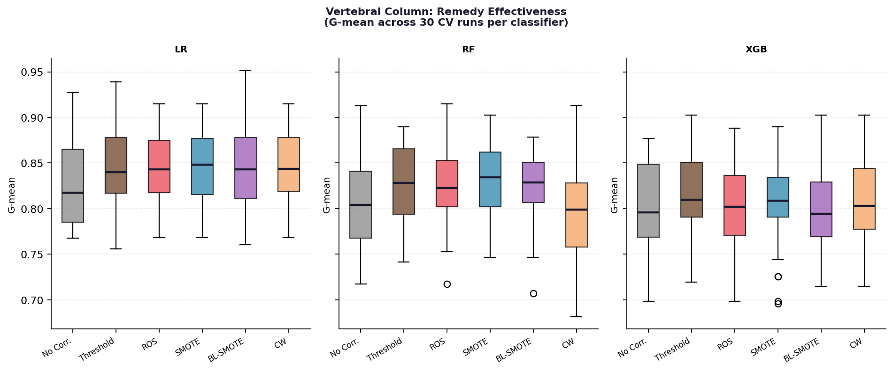
| Remedy | LR | RF | XGB | Across classifiers |
|---|---|---|---|---|
| No Correction | 0.829 ± 0.049 | 0.804 ± 0.053 | 0.802 ± 0.044 | 0.811 ± 0.050 |
| Threshold Corr. | 0.846 ± 0.045 | 0.829 ± 0.041 | 0.817 ± 0.047 | 0.830 ± 0.045 |
| ROS | 0.845 ± 0.038 | 0.825 ± 0.048 | 0.801 ± 0.047 | 0.824 ± 0.047 |
| SMOTE | 0.847 ± 0.042 | 0.834 ± 0.040 | 0.800 ± 0.045 | 0.827 ± 0.046 |
| Borderline SMOTE | 0.843 ± 0.049 | 0.819 ± 0.043 | 0.805 ± 0.050 | 0.822 ± 0.049 |
| Class Weighting | 0.847 ± 0.039 | 0.794 ± 0.051 | 0.806 ± 0.048 | 0.816 ± 0.051 |
Per-classifier entries summarise 30 evaluations. The last column pools 90 classifier–evaluation values per remedy; its standard deviation includes both between-classifier and between-evaluation variability. It is not a standard error or a confidence interval.
SMOTE has the highest mean for RF; threshold correction has the highest mean for XGB and the highest mean across classifiers. For LR, class weighting and SMOTE both round to 0.847 (their unrounded means differ by less than 0.00001). These are descriptive comparisons; no Nemenyi test is used for this case-study table.
Corrected benchmark and Vertebral results used by this page. Classification files include the additional metrics retained outside the main G-mean summaries. Each filename links to the corresponding CSV.
archetype_discovery.csv; the separate 94-row real_data_fiis.csv is not substituted for those summaries.Statistical references: Demšar (2006); SciPy Friedman test documentation. See the FIIS repository for experimental code.
Results snapshot: 10 September 2026. The downloadable files and the displayed summaries form one versioned snapshot.